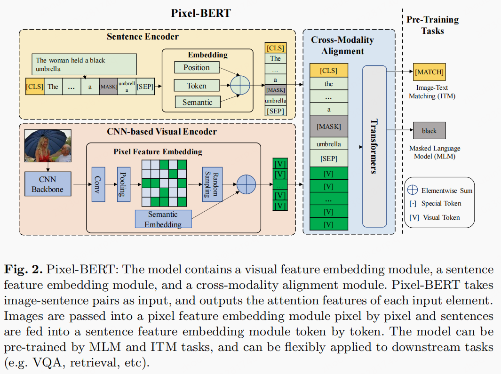
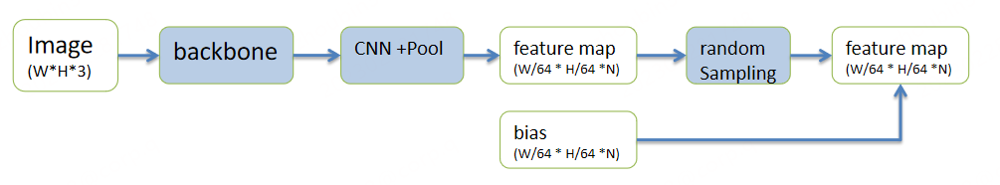
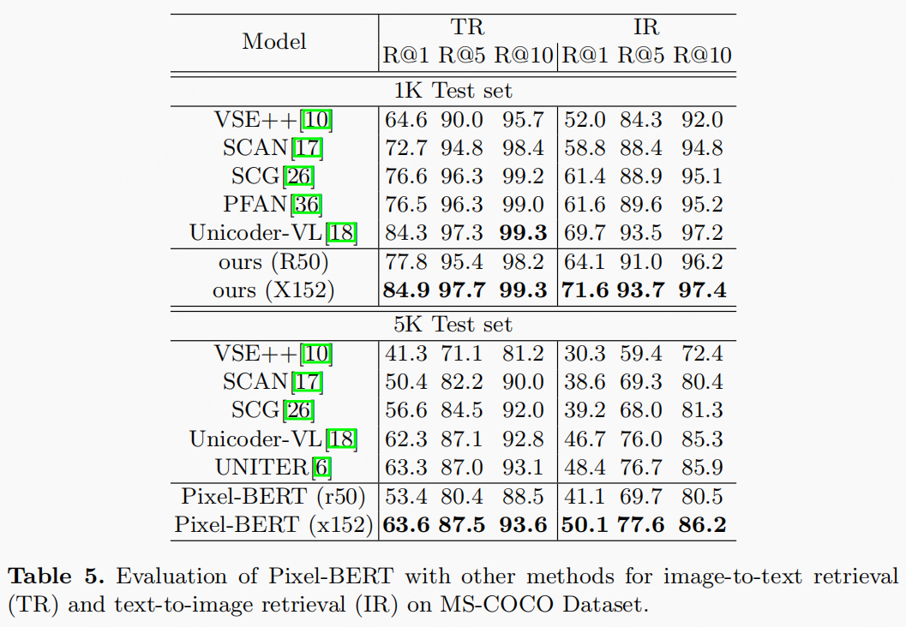
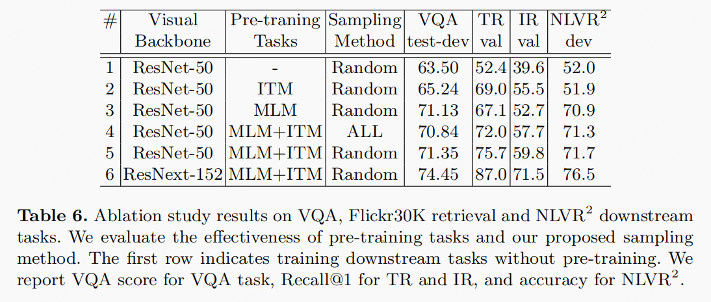

文章idea
image encoder抛弃了基于检测的方法，原因是：1. 模型太大也太重了； 2. 基于开源数据预训练过的检测模型，其类别和domain内容都受限于数据集。所以所以作者使用了基于CNN的backbone。
文章贡献
- 提出了新的多模态框架
Pixel-BERT - 在预训练阶段，会对
pixel进行随机采样以提高视觉表征的鲁棒性。
模型细节
模型框架图

- 相比UNITER，Pixel-Bert 舍弃了检测的视觉
encoder，使用了基于CNN的backbone。 - 文本侧的特征提取依旧使用了 BERT的tokenize方案，使用 wordPiece获取句子中的 token，经过 Embedding 获取表征 $w_i$，再结合位置特征 $p_i$，语义特征 $s_w$。此处语义特征在实现中并没有用到，此处的语义特征应该就是
bais。 - 图像侧提取抛弃了检测的方案，该方案对预训练的检测器类别和效果依赖很大。因此使用了基于
CNN的backbone，获取最后特征层输出：k*d，k是feature map中数值的个数，d是向量维度。最后的特征输出是 $v_i$，在加上语义特征$s_v$［此处的语义特征可以认为是 bais］，所以最后的图像特征是 $v_i + s_v$。具体特征变化图如下图所示：
 Pixel Random Sampling: 类似于dropout的思想，在feature map中随机选择100个像素点，这个步骤仅仅在预训练中。- 将文本特征与图像特征拼接在一起：［文本特征，图像特征］。最后送入
transformer—encoder联合训练。 - 损失函数：有两个
ITM［二分类损失］，MLM。
模型实验
数据集
- MS-COCO，
- Visual Genome
下游任务
此处有多个任务，只考虑 Image-Text Retrieval
Image-Text Retrieval
- 并非
zero-shot，而是进行了finetune操作，将其作为一个排序任务。 we use the ground-truth caption in the pair as the positive sample and randomly sample 20 unrelated captions from other pairs to make negative samplesWe only backward the gradient on 5 negative samples with the highest loss for each image sampleonly fine-tune the parameters in TransformerAdamW with 1e−4 learning rate and 1e−2 weight decay as optimizer

ablation study
该论文的消融实验，做的很清晰。
